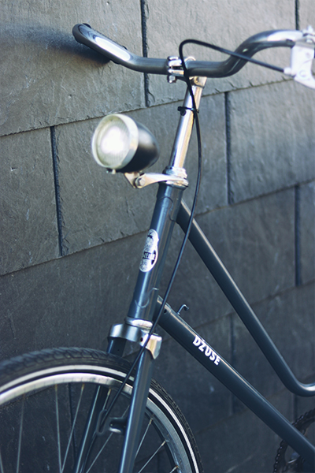
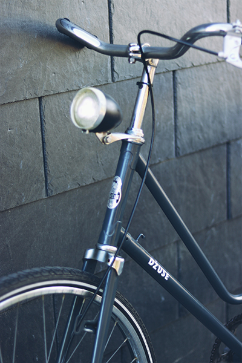

Restored bicycles
STEEL BIKE
Bike is made of several steel parts to be light and trustworthy. Steel frame and fork. Old shimano pedals , rims and spokes are from steel. Combine with design of mine. VERSAČE


GAZELLE
Royal Dutch Gazelle is the largest and most famous bicycle manufacturer in the Netherlands. Equipped with old drum brakes which are no longer common and cool headlight.
 



MIX
This bike was made by mixing two old bikes and some spare parts i had. Originally bike with the female frame was damaged, and i had a spare frame which was in good condition. Bike itself is very light, if you change the rear wheel.

URAL
The Ural went down in history as a highly-durable cross-country bike, resistant to deterioration and suitable for brutal workloads. Indeed, Soviet people tested this model for years by using it to transport everything from canisters to wood to pipes to fishing rods — it withstood all pressure with ease.


OJSC AMO ZiL
Known fully as the Public Joint-Stock Company – Likhachov Plant. Was a major Russian automobile, truck, military vehicle, and heavy equipment manufacturer that was based in Moscow, Russia.